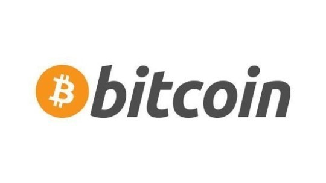
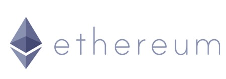
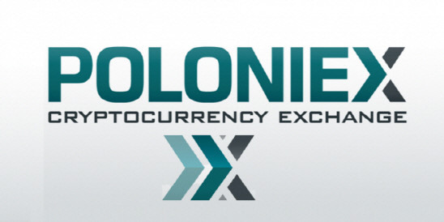

명칭 : 비트코인(Bitcoin)
ISO 4217코드 : BTC (비표준), XBT (비공식)
도입일 : 2009년 1월 3일
개발자 : 사토시 나카모토
분류 : 암호화폐
발행방식 : PoW(Proof-of-Work, 작업 증명)
채굴
비트코인 지갑을 만들고 암호를 풀어야 한다. 일반PC 1대 기준 5년의 시간이 소비된다.
채굴 풀(mining pool)을 사용하면 계산성능 일부를 암호 해독 과정에 보태고, 완료될 시 기여한만큼 나눠받을수
있고 PC의 성능이 좋을수록 더 많은 비트코인을 얻는다. 채굴 풀에 가입 후 프로그램을 다운받아 자기계정에 연동해야 합니다.
특징
- 자체 강화 방식
- 오프라인 방식
- 양도 가능
- 분할 및 통합 가능
- 익명 지불 가능

명칭 : 이더리움(Ethereum)
자체 통화의 기호 : ETH(비공식 ISO 4217 코드)
출범 : 2015년 7월 30일
개발자 : 비탈릭 부테린
분류 : 암호화폐
발행방식 : PoW(Proof-of-Work, 작업 증명) 채굴
채굴
이더리움 지갑을 채우기 위해서는 본격적인 채굴작업에 나서야 합니다. 일반PC 한대로 이더리움 암호를 풀기 위해서는
몇년이 걸릴지 모른다. 이것도 마찬가지로 채굴풀을 이용한다. 예전과 달리 블록을 생성하기 위해 필요한 컴퓨팅 블록을
채국하고 기여한만큼 보상을 받는다. 즉 채굴의 난이도가 갈수록 증가해서 개인이 채굴하는 방식으로는 경쟁력이 없어져
협업을 하여 공헌도에 따라 보상을 분배받는 방식이다.
특징
- 비트코인과 달리 오픈형 플랫폼으로 분산화된 다양한기능
- 프로그래밍 언어로 작성된 모든 종류의 응용 프로그램 독립적 프로토콜
- 스마트 컨트랙트
- GPU 채굴을 기반으로 한 poW방식 채택

명칭 : Poloniex(폴로닉스)
운영 : Poloniex, LLC
대표이사 : Tristan D'Agosta
본사 : Wilmington,Delaware, U.S.
상장명 : 비상장
장점
1. 현시점에서 가장 투자자들에게 지지받는 암호화폐 거래소 중 하나.
2. 비트코인, 이더리움, 모네로, 테더를 기축으로 다양한 알트코인들이 거래된다.
3. 외국 거래소 지만 다양한 알트코인을 취급하고 거래량도 활발하다.
단점
1. 요즘들어 지속된 하락장과 소극적인 신규 코인상장,잦은 접속오류문제로 자본이 Bittrex같은 거래소로 이동됨.
2. 이곳에서 오입금시 티켓을 받는데만 오래걸리고 찾을확률은 거의없다.